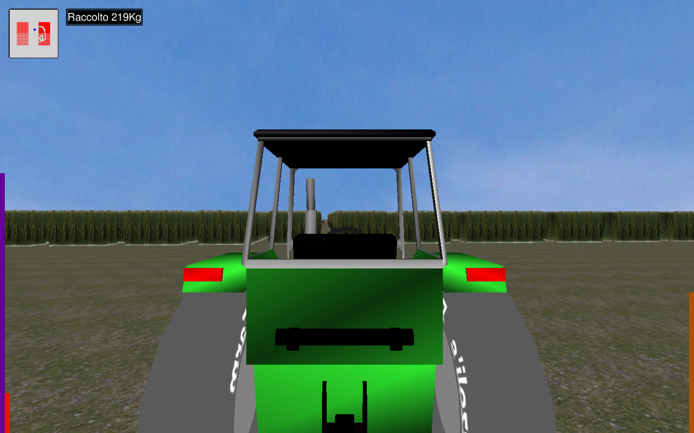

MyFarm è un videogioco 3D in terza persona interamente sviluppato in C++ mediante l'ausilio delle librerie OpenGL ed SDL in ambiente *nix come progetto finale per il corso di Grafica tenutosi nell'anno 2015/2016 dal prof. Giulio Casciola presso l'Università Alma Mater degli Studi di Bologna. In questo sito web sono presentati gli step che hanno permesso la creazione di MyFarm. Particolare attenzione sarè data alle funzioni utilizzate per la creazione degli oggetti nella scena, della scenografia, dell'illuminazione, nonché delle texture che sono state impiegate.
Il progetto MyFarm si ispira al progetto Car mostrato a lezione. In esso una monoposto era libera di muoversi nella scena e seguire un circuito. Il primo passo è stato sostituire la monoposto con il trattore protagonista del nostro gioco. La carlinga della monoposto è stata sostituita dalla carrozzeria del trattore e lo stesso è stato fatto per le ruote. Risetto alla monoposto è stato aggiunto un volante che si muove insieme allo sterzo. Quest'ultimo e le ruote sono animate attraverso l'utilizzo delle funzioni glRotate e glTranslate. I movimenti nella scena sono soggetti alle leggi fisiche del mondo e sono implementati seguendo le dinamiche usate nel progetto Car.
Per mantenere delle prestazioni accettabili, è molto importante fare attenzione al numero di poligoni delle mesh utilizzate. Per questa ragione, tutte le mesh utilizzate nella scena, sono state scelte controllando la complessitaà delle loro geometrie. Questo è stato possibile importando le mesh in blender, dove le mesh sono state anche modificate e successivamente esportate nel formato obj. Quasi sempre si sono ottenuti più file obj dalla stessa mesh, poichè la mesh originale è stata scomposta in parti più piccole per motivi di gestibilità e personalizzazione (colore e/o texture).
MyFarm è una rappresentazione di una fattoria nella quale il giocatore deve raccogliere più kg di mais possibili in 1 minuto. Il trattore è posto al centro della scena e da qui l'utente può muoversi per la scene e raccogliere il mais dai campi che lo circondano. Ogni qualvolta un blocco di mais viene investito il raccolto incrementa di 1 kg.
L'interfaccia è composta da pochi semplici elementi. Quello più evidente è senza dubbio la mappa 2D della scena. In essa sono visibili la posizione del trattore nella scena (punto blu) e quella del mais che non è stato ancora raccolto (punti rossi). Contro i bordi laterali della finestra sono rappresentate con tre barre 2D le informazioni riguardo fps per secondo, percentuale del mais raccolto e il tempo rimanente. Le barre differiscono per altezza e colore, elementi che cambiano anche durante la partita per rappresentare dati diversi. La barra dei frame per secondo (estrema sinistra) varia tra il rosso (minimo) e il blu (massimo) passando per il viola. Sempre sul lato sinistro è visibile la barra del raccolto. Inizialmente vuota cresce in proporzione al mais raccolto e cambia colore partendo da un rosso iniziale fino al verde per le percentuali maggiori. Dal lato opposto della finestra (estrema destra) è presente la barra del tempo. Essa parte da piena e cala col passar del tempo. I colori usati sono sempre il verde e il rosso, che aiutano a inquadrare meglio la situazione temporale. L'ultimo elemento è una scritta che indica in modo testuale i kg di mais raccolti fino a quel momento.
Attraverso l'uso della libreria SDL è creato il ciclo degli eventi che permette di gestire tutti gli eventi in input forniti dall'utente. Nella modalità camera libera è possibile ruotare il punto di vista, mediante il trascinamento e la pressione del tasto sinistro del mouse, mentre tramite lo scroll si controlla lo zoom. Questi comandi sono stati gestiti attraverso l'utilizzo degli eventi SDL_MOUSEMOTION e SDL_MOUSEWHEEL. L'accelerazione (positiva e negativa) e lo sterzo sono controllati da tastiera o Joystick. Attraverso glie eventi SDL_KEYDOWN e SDL_KEYUP si può verificare la pressione di uno tra i pulsanti W, A, S, D utilizzati per il movimento del veicolo. Al verificarsi di questi eventi le chiamate alle funzioni EatKey e DoStep modificano i parametri della classe Tractor che definiscono la sua posizione nella scena e quindi i suoi spostamenti quando sarà chiamata la funzione Render. In alternativa a questi tasti, il trattore può essere controllato anche attravero un Joystick esterno. Gli eventi SDL_JOYAXISMOTION, SDL_JOYBUTTONDOWN e SDL_JOYBUTTONUP, mappati dalla funzione Joy nei comandi corrispondenti, ci permettono di utilizzare il movimento del joypad e la pressione dei pulsanti come alternativa ai pulsnati W, A, S, D. Oltre ai pulsanti citati sopra sono attivi anche i pulsanti ESC, utilizzato per uscire dalla schermata finale, e i pulsanti F1 F2 F3 F4 F5. Questi danno la possibilità di cambiare tra le posizioni definite per la camera, osservare il mondo in wireframe, utilizzare una carrozzeria differente (texture), attivare le luci frontali del trattore e nascondere l'ombra del veicolo.
Find us at some address at some place.
FYI! We offer full-service catering for any event, large or small. We understand your needs and we will cater the food to satisfy the biggerst criteria of them all, both look and taste.
Reserve a table, ask for today's special or just send us a message: